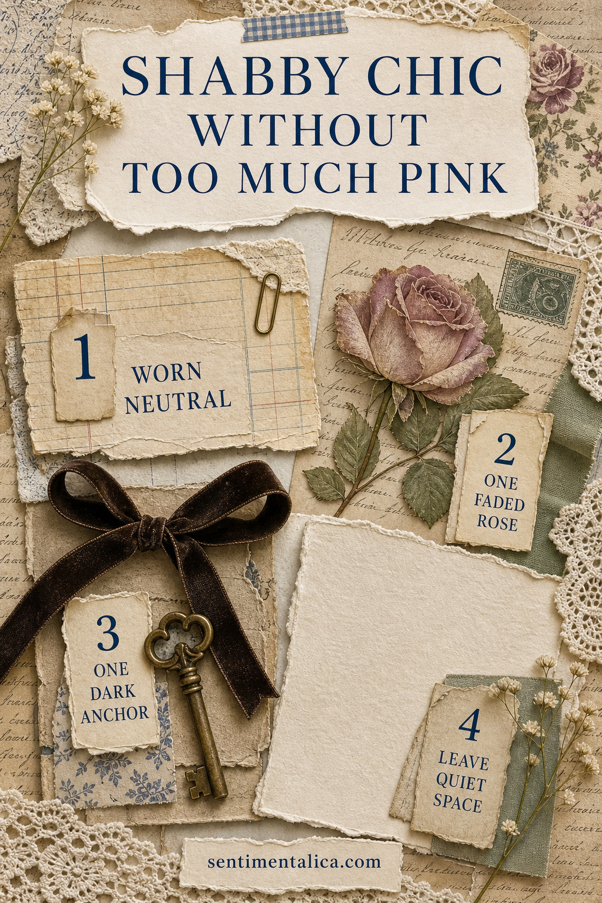
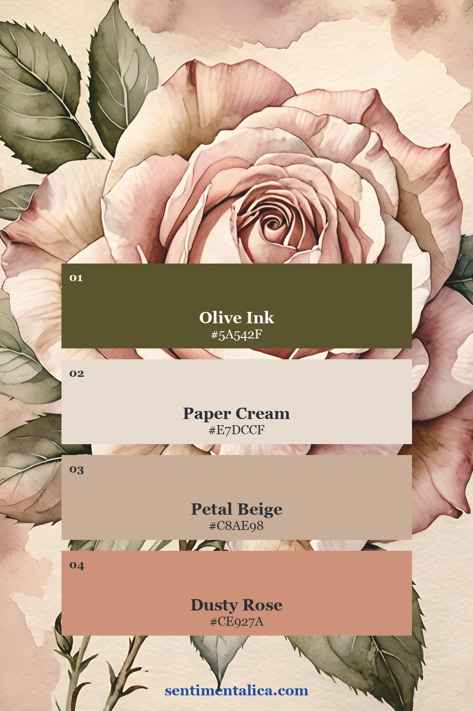
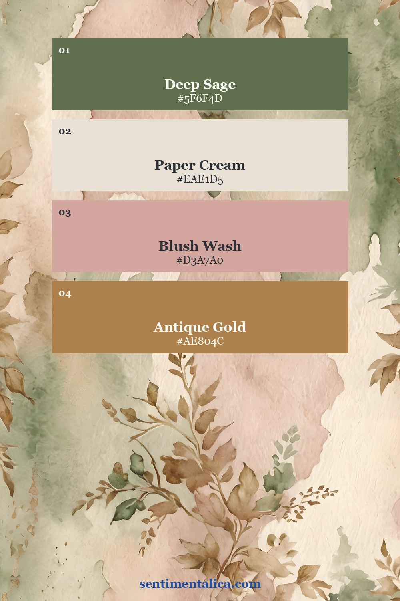
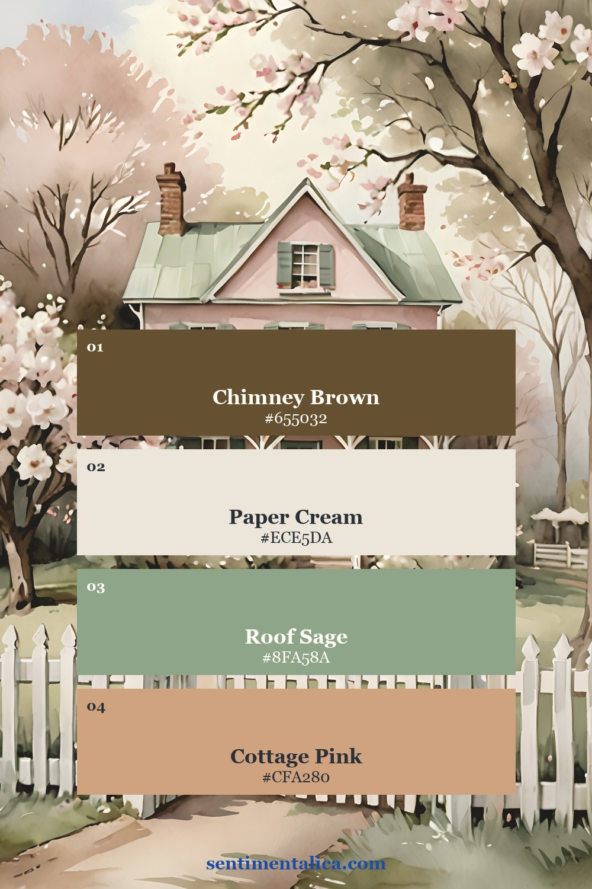
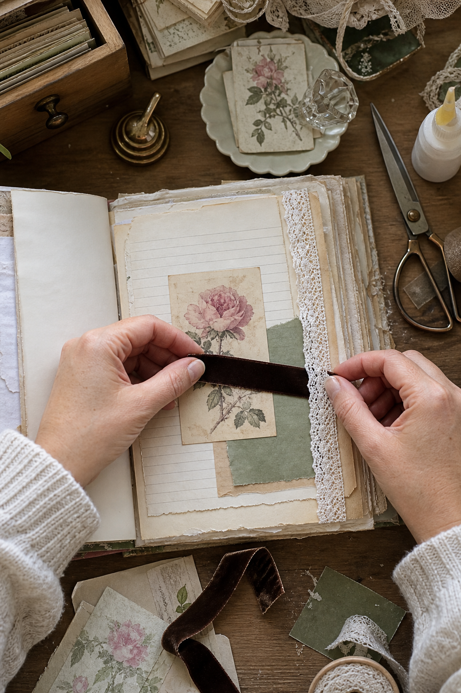
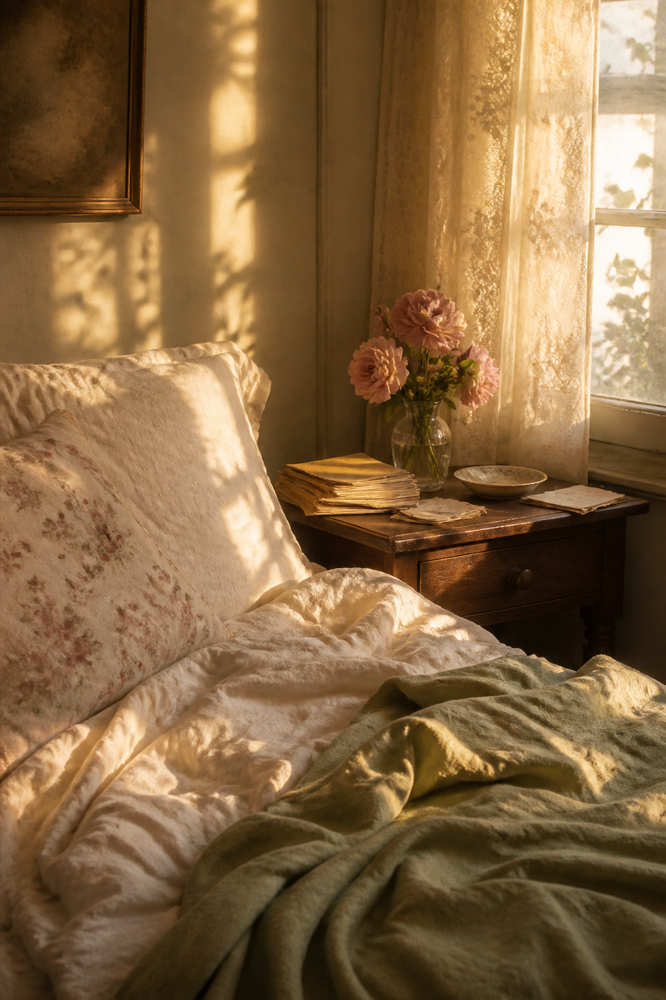
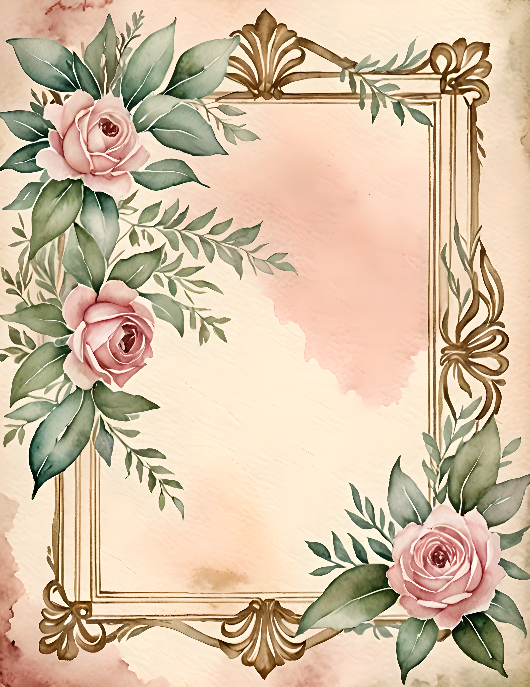
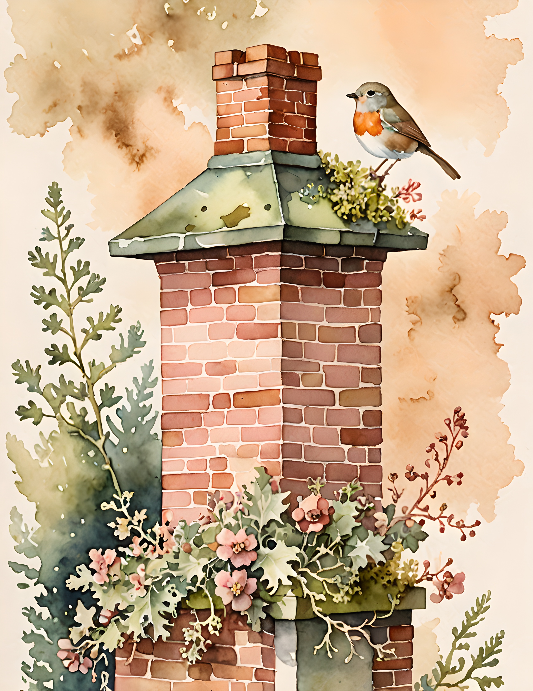
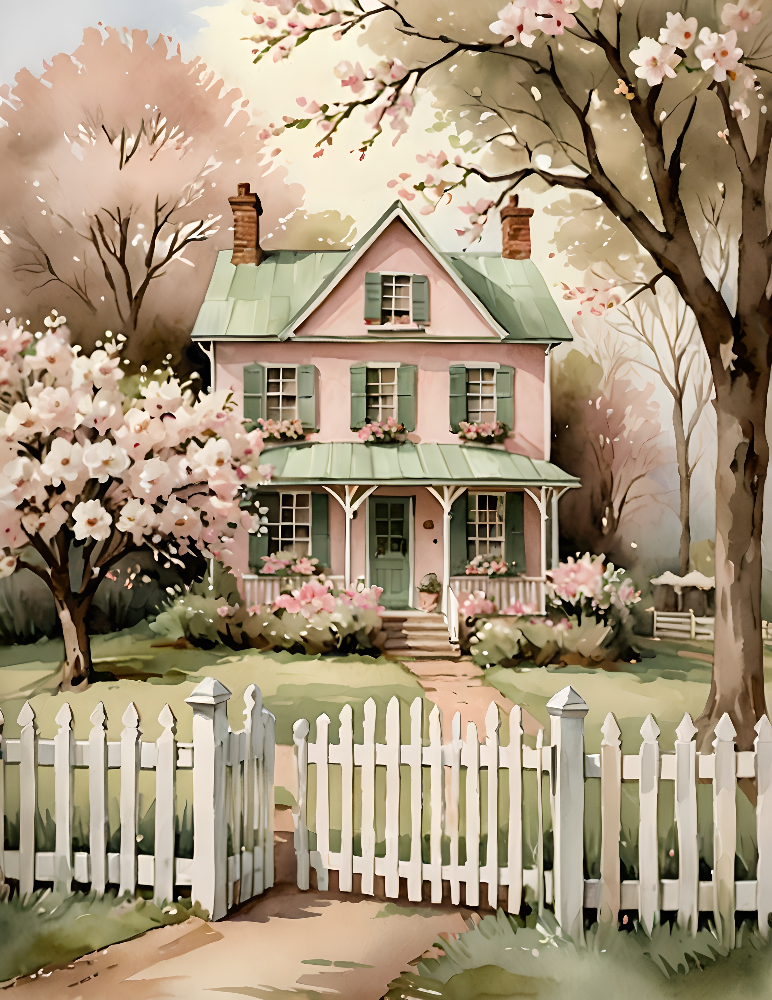

A shabby chic journal does not need to be pink from edge to edge. The style feels softer when romance is balanced with age, texture, and a little visual quiet. Think of a room where one faded rose sits beside weathered wood, cream linen, and an olive branch. The rose still feels special because it has space around it.

Begin with a quiet foundation
Choose cream, parchment, pale stone, or washed sage for most of the page. This is the breathing room. It keeps lace, florals, and decorative labels from merging into one sweet blur. A tea-stained ledger page works well, but so does a simple sheet with faint handwriting or a barely visible pattern.
Before gluing anything, cover roughly two thirds of the spread with calm materials. Let the remaining third carry the romance. This simple proportion is easier to judge than trying to make every scrap equally interesting.
Use pink as an accent, not the whole story
Pick one rose image, one blush paper, or one length of dusty ribbon. Then stop and add a neighboring color that feels older and earthier. Olive, mushroom brown, tarnished silver, charcoal, and muted plum all work beautifully. The contrast gives pink a purpose instead of letting it become background noise.



Add one note of useful darkness
A thin dark ribbon, a line of handwriting, an old key, or a charcoal botanical drawing can hold the composition together. It does not make the page gloomy. It gives the eye a place to rest and makes pale lace and petals easier to see.

Try placing the darkest element near your main floral image. Keep it small and repeat the tone once elsewhere, perhaps with a date stamp or a few written words. Two quiet repetitions feel intentional without turning into a rigid color scheme.
Let age appear through texture
Shabby chic becomes convincing through surfaces: a torn cotton edge, rubbed paper, a faded fold, or lace that looks softened by use. Avoid distressing every object. One worn envelope beside a clean botanical card creates more believable history than ten uniformly browned pieces.

Rose Cottage is a useful visual example because its roses share the page with architecture, birds, frames, handwriting, and muted greenery. Those supporting details keep the mood romantic without asking every element to be floral.
Build one balanced cluster
Place a medium botanical or cottage image first. Tuck a narrow piece of lace under one edge, add a smaller label or ticket, then finish with a dark thread or handwritten date. Leave at least one corner almost empty. The empty corner is not unfinished. It is what makes the cluster feel delicate.



If the finished page still feels too sweet, do not remove the rose first. Replace one pink supporting piece with cream, sage, or brown. If it feels too plain, add one tactile detail rather than another large picture. A bow, torn fabric tab, or tiny pearl is often enough.
You can practise the same balance with the 100 free floral pictures. Choose one flower, pair it with two quiet papers, and see how little decoration the image actually needs. For more gentle projects, visit the Sentimentalica journal.